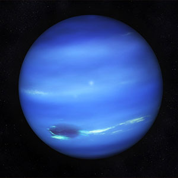

Neptune's dark vortices are high-pressure systems and are usually accompanied by bright "companion clouds," which are also now visible on the distant planet. The bright clouds form when the flow of ambient air is perturbed and diverted upward over the dark vortex, causing gases to likely freeze into methane ice crystals.
Dark, cold and whipped by supersonic winds, ice giant Neptune is the eighth and most distant planet in our solar system. More than 30 times as far from the Sun as Earth, Neptune is the only planet in our solar system not visible to the naked eye. In 2011 Neptune completed its first 165-year orbit since its discovery in 1846.